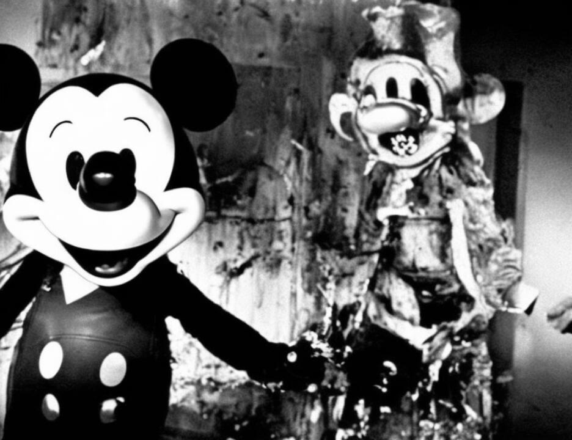

6438
1 not specifically invoked Rule 16.
2 MR. BAUGH: No, your Honor, that's correct, but under
3 the Officer Pepe incident, for instance, the first motion we
4 filed was a Brady issue as to Officer Pepe and it was not
5 invoking --
6 THE COURT: Tell me how -- if I may interrupt you.
7 MR. BAUGH: Yes, sir.
8 THE COURT: -- how the discovery request that you
9 have in fact made differs from the discovery requests that
10 would be made under Rule 16.
11 MR. BAUGH: Your Honor, I don't believe we have filed
12 a discovery request for the penalty phase. If I'm in error --
13 MR. COHN: We haven't.
14 MR. BAUGH: We have never filed a Rule 16 penalty
15 request.
16 THE COURT: So I should tell the government now that
17 if it is in possession of any documents or materials that it
18 has not furnished to you, it need not do so.
19 MR. BAUGH: No, your Honor, because, no, here's why.
20 If there are documents that must be tendered in compliance
21 with Brady or notice, then they have to do it. If it is
22 general Rule 16 discovery, they do not. We have couched all
23 our requests in terms of notice and Brady.
24 MR. FITZGERALD: Your Honor, first of all, I think we
25 should take back the packet we gave over this morning. I
6439
1 think we should strike the motion, and I think they should
2 give back the discovery. We always understood that this was
3 discovery in a case of capital prosecution. No one, until the
4 other day for the first time, brought up the notion that they
5 were splitting discovery between the guilt phase and the
6 punishment phase, and I think it's ridiculous.
7 THE COURT: I don't know that that's what it is, but
8 I would say it's certainly inappropriate in any case but
9 especially inappropriate when we're talking about a death
10 penalty case.
11 The fact that counsel have not insisted on dotting
12 every I and crossing every T in furnishing material in
13 response to the urge requests of defendants it seems to me was
14 commendable. Now you take the position that you have not
15 asked for anything which was not compelled by Brady, or you
16 mentioned something else.
17 MR. BAUGH: Notice.
18 THE COURT: Or notice.
19 MR. BAUGH: Which case law says we're entitled to
20 which are constitutionally based and are not governed by Rule
21 16.
22 THE COURT: I will advise the government then that
23 unless required by Brady or 601, the government need not
24 furnish any material to defense counsel since defense counsel
25 has explicitly disclaimed any right to any material other than
6440
1 Brady or 601.
2 MR. BAUGH: That's correct. If I might --
3 THE COURT: You have no problem with that.
4 MR. BAUGH: Your Honor, and the file --
5 THE COURT: Mr. Ruhnke, do you have any problem with
6 that?
7 MR. RUHNKE: Judge, let me --
8 THE COURT: Let's take a five minute recess.
9 MR. RUHNKE: We consider ourselves engaging in Rule
10 16 discovery.
11 THE COURT: Excuse me?
12 MR. RUHNKE: We consider ourselves to be engaging in
13 Rule 16 discovery and have been.
14 THE COURT: Very well. That does not apply then to
15 counsel for KK Mohamed. Isn't this absurd?
16 MR. BAUGH: No, your Honor. We didn't even know
17 until Mr. Fitzgerald made that statement last week about Rule
18 16 discovery that anyone was under the impression that had
19 been triggered. That's how come I stood up and made the
20 statement.
21 THE COURT: Are you sanguine that when you are second
22 guessed, and the history of this type of litigation is that
23 counsel are always second guessed by successor counsel --
24 MR. BAUGH: Of course --
25 THE COURT: -- that you will not be criticized for
1